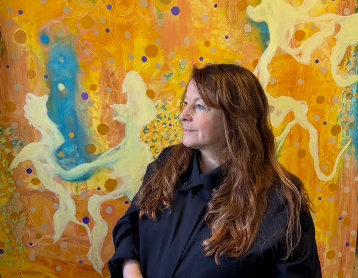
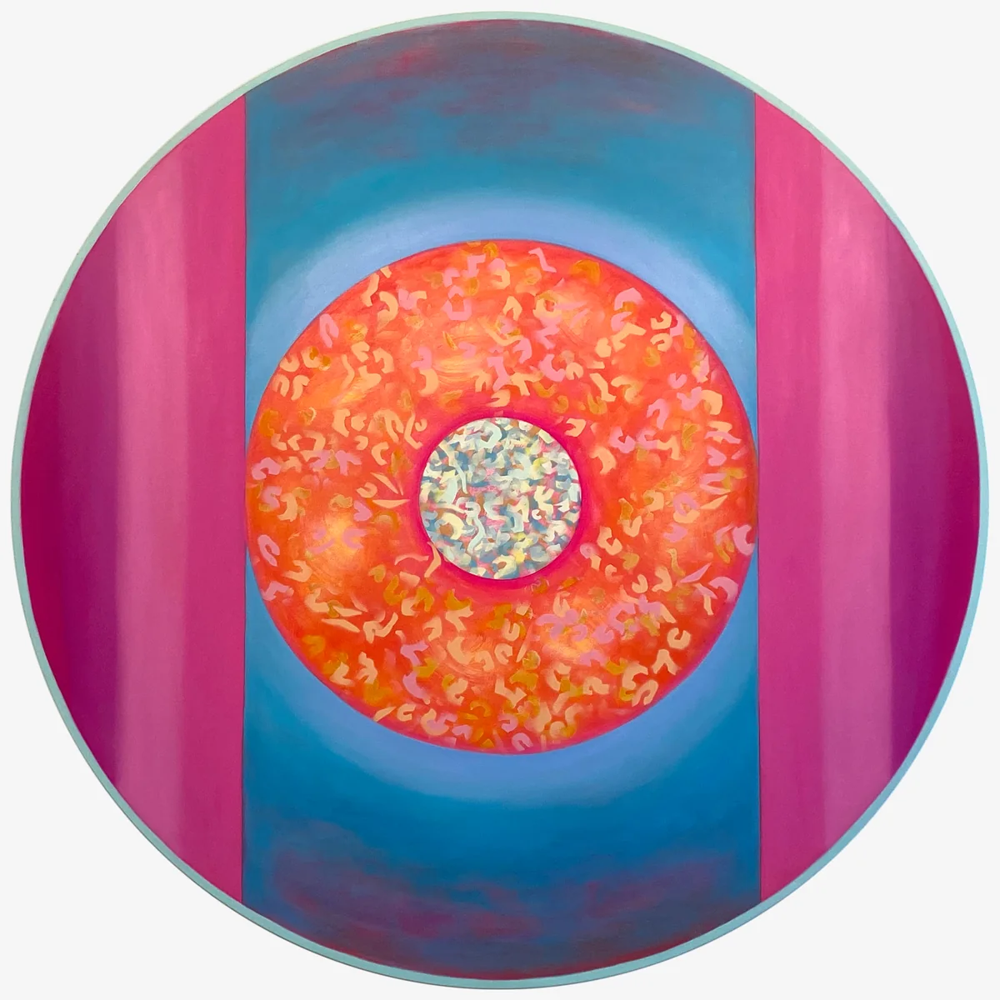

Karen Ebbs
Abstract painting and colour are central to my practice and visual language. I am curious about perception, consciousness and the nature of reality, which I explore through thinking and making. Working intuitively, I make large-scale artworks spanning sculpture and installation, bringing elements together to create immersive spaces.
Works
16 artworks
 'Simply Put, Life is Complex'2025 · Oil on linen · 230 × 180 × 2.5 cm€8,000
'Simply Put, Life is Complex'2025 · Oil on linen · 230 × 180 × 2.5 cm€8,000 'Once A Day, Find Yourself Lost'2025 · Oil on linen · 230 × 180 × 2.5 cm€8,000
'Once A Day, Find Yourself Lost'2025 · Oil on linen · 230 × 180 × 2.5 cm€8,000 'A World Beyond Words'2025 · Oil on linen · 230 × 180 × 2.5 cm€8,000
'A World Beyond Words'2025 · Oil on linen · 230 × 180 × 2.5 cm€8,000 'In Flux'2025 · Oil on linen · 230 × 180 × 2.5 cm€8,000
'In Flux'2025 · Oil on linen · 230 × 180 × 2.5 cm€8,000 'The Shape of Motion'2025 · Oil on linen · 230 × 180 × 2.5 cm€8,000
'The Shape of Motion'2025 · Oil on linen · 230 × 180 × 2.5 cm€8,000 'Vibrations of Light' I2025 · Oil on linen · 180 × 230 × 2.5 cm€8,000
'Vibrations of Light' I2025 · Oil on linen · 180 × 230 × 2.5 cm€8,000 'Vibrations of Light' II2025 · Oil on linen · 180 × 230 × 2.5 cm€8,000
'Vibrations of Light' II2025 · Oil on linen · 180 × 230 × 2.5 cm€8,000 'Vibrations of Light' III2025 · Oil on linen · 180 × 230 × 2.5 cm€8,000
'Vibrations of Light' III2025 · Oil on linen · 180 × 230 × 2.5 cm€8,000 'Immersed in the Act of Becoming'2023 · Oil on linen · 230 × 180 × 2.5 cm€8,000
'Immersed in the Act of Becoming'2023 · Oil on linen · 230 × 180 × 2.5 cm€8,000 'Becoming'2022 · Oil on canvas · 180 × 200 × 2.5 cm€8,000
'Becoming'2022 · Oil on canvas · 180 × 200 × 2.5 cm€8,000 'Perception: A "Best Guess"'2021 · Oil on canvas · 150 × 380 × 2.5 cm€10,000
'Perception: A "Best Guess"'2021 · Oil on canvas · 150 × 380 × 2.5 cm€10,000 'A Field of All Potentialities'2021 · Oil on canvas · 150 × 190 × 2.5 cm€7,800
'A Field of All Potentialities'2021 · Oil on canvas · 150 × 190 × 2.5 cm€7,800 'The Act of Becoming'2024 · Oil on wooden tondo · 150 × 150 × 3 cm€6,500
'The Act of Becoming'2024 · Oil on wooden tondo · 150 × 150 × 3 cm€6,500
'Everthing is Revealed... Eventually'2024 · Oil on wooden tondo · 150 × 150 × 3 cm€6,500 'Stillness Speaks'2024 · Oil on wooden tondo · 150 × 150 × 3 cm€6,500
'Stillness Speaks'2024 · Oil on wooden tondo · 150 × 150 × 3 cm€6,500 'The Layers Beneath'2024 · Oil on wooden tondo · 150 × 150 × 3 cm€6,500
'The Layers Beneath'2024 · Oil on wooden tondo · 150 × 150 × 3 cm€6,500
About Karen
Statement
My name is Karen Ebbs and I am Dublin-born visual artist with years of professional practice, working from my studio at the Digital Hub, Dublin. I am an alumna of NCAD and the RHA School. I hold first class honours degrees for both an MA and a BA in Fine Art in Painting from NCAD. Following my MA I was shortlisted for the RDS visual Artis Awards, 2023. I am a member of Pallas Projects + Studios.
Abstract painting and colour are central to my practice and visual language. I paint to interpret the world around me and explore the mystery of existence. Painting is my way of thinking and processing my experience of reality. I work across painting, sculpture and installation, using oil paint, porcelain, aluminium, plexiglass and wood. I create large-scale, luminous colour fields through gestural mark-making and recurring motifs. Elements are often installed as immersive spaces enveloping the viewer.
Rooted in a fascination with perception and how it occurs, my work begins with the belief that seeing is never passive; what we perceive is inseparable from who we are. I have an intuitive relationship with colour which is underpinned by research in colour theory, perceptual psychology, philosophy and neuroscience.
Bio Selection
I have exhibited widely in group shows including the RHA annual, Boyle Arts Festival, and Draoicht Arts Centre. Recent solo exhibitions include ‘An Outer Reflection of an Inner Reality’, Municipal Gallery, dlr Lexicon (2025) (open call solo award), ‘Circumambulation’, Rathfarnham Castle OPW (2024), ‘Wild Accumulations’, The LAB Gallery (2022), and ‘I Am More Blue Than You’, Farmleigh Estate OPW. I received the Arts Council Agility Award (2022) and Dún Laoghaire Professional Development Award (2022).
Interested in Karen Ebbs's work?
Send an enquiry through PlotArt and we'll put you in touch with the artist.
Enquire through PlotArt